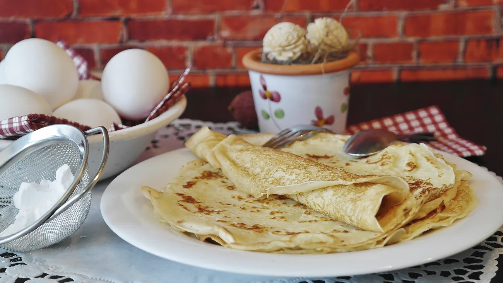

Easy Pancakes

Description
Learn a skill for life with our foolproof easy crêpe recipe that ensures perfect pancakes every time - elaborate flip optional.
Ingredients
- 100g plain flour
- 2 large eggs
- 300ml milk
- 1 tbsp sunflower or vegetable oil, plus a little extra for frying
- lemon wedges to serve (optional)
- caster sugar to serve (optional)
Steps
- Put 100g plain flour, 2 large eggs, 300ml milk, 1tbsp oil, and a pinch of salt into a bowl, then whisk to a smooth batter.
- Set aside for 30 mins to rest if you have time, or start cooking straight away.
- Set a medium frying pan or crepe pan over a medium heat and carefully wipe it with some oiled kitchen paper.
- When hot, cook your pancakes for 1 min on each side until golden, keeping them warm in a low oven as you go.
- Serve with lemon wedges and caster sugar, or your favourite filling.
This recipe is from BBC Good Food's Cassie Best